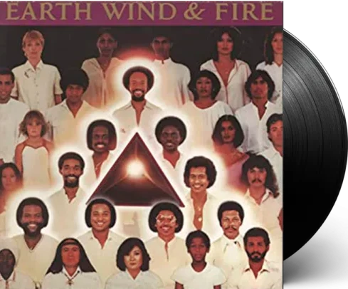

MOST POPULAR

System of a down - Hypnotize
15 In Stock!
22€

Gorillaz - Demon Days
3 In Stock!
25.50€

Depresión sonora - El arte de morir muy despacio
10 In Stock!
20€

Nirvana - In Utero
15 In Stock!
22€
Find More!
MOST RECENT

Kendrick Lamar - To Pimp a Butterfly
15 In Stock!
22€

Earth Wind & Fire - Faces
15 In Stock!
22€

Kendrick Lamar - DAMN
15 In Stock!
22€